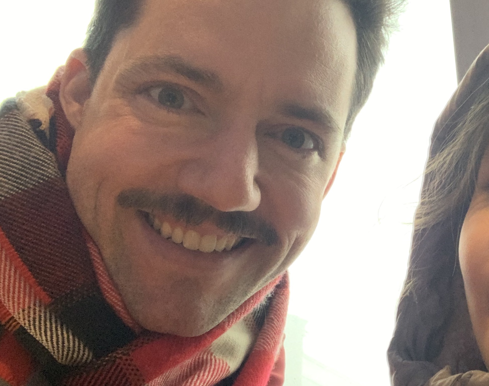

Tyler Sinks. A Man Who Once Assembled a Portfolio.
Disclaimer: This landing page was assigned as part of the Intro to Coding curriculum at Epicodus. However, this does not keep me from having a bit of fun during its creation.
A brief aside about Tyler's diverse, professional side
- I will share a few tidbits about me:
- I have recently undertaken a bold career change from waiter to aspiring coder. I hope to go pro sometimes soon after completing Epicodus's software engineering bootcamp.>
- Previously, I could be found waiting tables at Friend of a Farmer and Don Giovanni -- both are New York City restaurants
- Teaching ninth-grade science at a newly created NYC public school brought me into contact with quite a few characters and really energizing students and staff.
- Past employment also includes administering psychiatric care as a child psychiatric aide at a Missouri state-run residential psychiatric hospital,
- "road warrior" --"Community Support Specialist" in the social work world's parlance -- who administers social work-like work but isn't allowed to call himself "social worker,"
- and of course, way back when, some requisite customer service/sandwich styling experience via Target and Quizno's
A philosophy that touches on self-esteem

"Whether you think you can or you think you can't... You're right."
An American writer's lens on the effects of experiencing a complete solar eclipse

"Usually it is a bit of a trick to keep your knowledge from blinding you. But during an eclipse it is easy."
Wes Anderson movies

"White people love Wes Anderson movies more than they love their kids. If a white guy takes a white girl to a Wes Anderson movie on their first date, and neither of them have seen it, they will immediately commence a relationship that is reflected in songs by Ryan Adams and Bright Eyes."
Gentiana lutea: Gentianaceae (Gentian Family)
,_Blütenstand.jpg)
"Without this tall yellow flower that grows wild in French alpine meadows, any number of classic cocktails would not exist. The Manhattan, the Negroni, and the Old-Fashioned all rely on the bitterness of gentian."